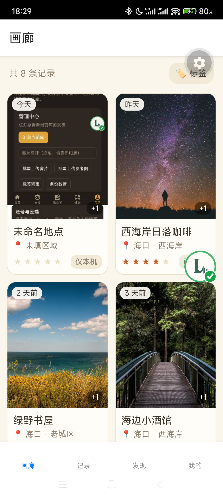
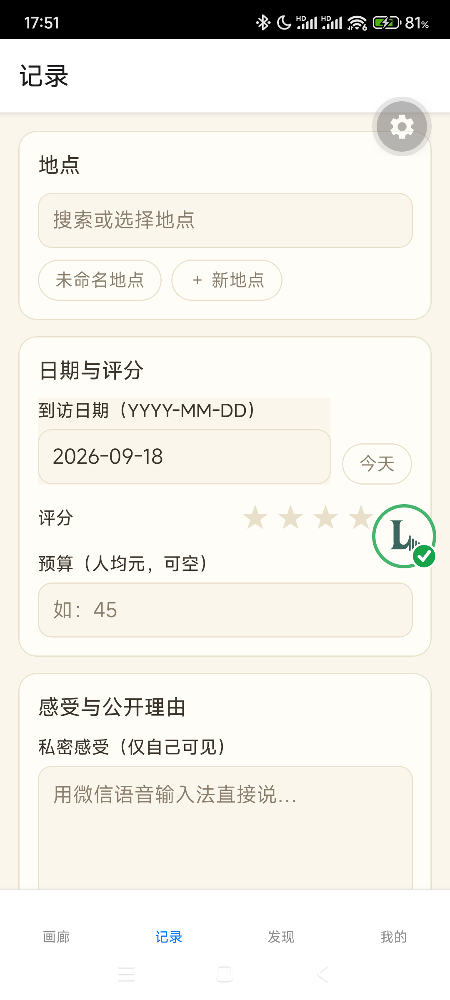
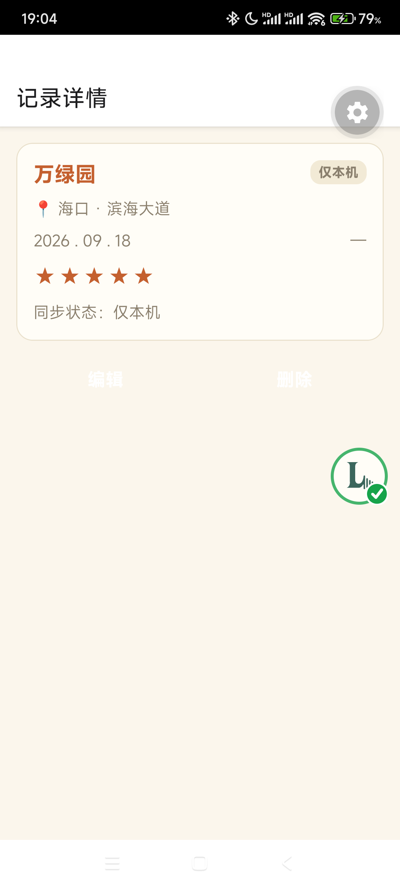

作业提交材料｜Place Journal（我的地点）
一、一句话介绍
Place Journal 是一个 Android 端的私人「地点手账」App：拍照加写下当时的感受，就能记录一家去过的店；数据先存进手机本地数据库，登录后同步到云端；之后可以按地点、标签、评分随时回顾，还能生成分享链接发给朋友。
二、App 运行截图
共 3 张，截图见文末。（均在真机上实拍，画面里是演示数据。）
- 图 1｜画廊首页：所有记录按时间倒序排列，显示封面照片、地点名、区域和评分。
- 图 2｜记录页：新增一条记录，选地点、填日期、评分、人均消费和感受。
- 图 3｜记录详情：保存后重新打开，这条记录从数据库里读出来展示。
三、App 页面结构说明
App 用 Expo Router 做页面路由，底部有 4 个主页面：画廊（首页列表）、记录（新增记录）、发现（搜索筛选）、我的（账号与同步状态）。
另外还有 8 个二级页面：记录详情、地点时间线、AI 整理、标签管理、冲突裁决、分享管理、分享快照、登录回调。
四、核心功能说明
- 记录：选地点（可现场新建）、拍照或多选图片、填日期、评分、人均消费和感受，一键保存。
- 本地优先保存：记录和照片先写进手机本地数据库，同时进入待同步队列，所以没网、没登录也能正常记录，杀进程不会丢数据。
- 云同步：登录后按固定顺序把数据同步到云端（先建地点、再写记录、再传照片），带版本号做乐观锁防止互相覆盖；真有冲突时让用户自己选保留哪一份。
- 回顾与检索：按地点、标签、评分档位或一句话关键词找记录，离线也能用。
- AI 整理（可选）：可以把随手写的感受交给 AI，整理成评分、人均和标签，确认后再保存；接口不可用时自动跳过，不影响手工保存。
- 分享：选几个地点生成只读分享链接；私密感受永远不会出现在分享内容里，分享可随时撤销。
五、接入了什么数据库
用的是本地数据库加云端数据库的双库方案。
- 本地：SQLite（通过 expo-sqlite），共 11 张表，存地点、记录、照片、标签、待同步队列等，支持离线读写。
- 云端：Supabase（PostgreSQL），独立 Schema habit_tracker，共 8 张表，所有表都启用了行级安全（RLS）按用户隔离；照片存在 Supabase Storage 里。
- 数据闭环：在记录页新增一条记录，存进本地 SQLite，回到画廊首页和详情页能读出来展示，登录后同步到 Supabase，换设备或网页端也能看到。
附：App 运行截图（3 张）

图 1｜画廊首页：记录按时间倒序排列

图 2｜记录页：新增一条记录

图 3｜记录详情：保存后从数据库读出展示